By Ouc-houang Fogoum Philippe Jacques and Håvard Næss
This project presents a novel approach to predicting average book
ratings using machine learning model based on data collected from http://www.goodreads.com. The primary objective is to
develop a reliable and accurate prediction model that considers various
book features, such as author, genre, publication year, and number of
pages, to estimate the average rating a book is likely to receive.
We employ severay preprocessing techiniques to clean and organize the
data, and evaluate the performance of multiple machine learning
algorithms, including linear regression, polynomial regression, gradient
boosting, gradient penalty and random forest.
The immense growth of online platforms and social networks has
resulted in a surge of user-generatged content, including book reviews
and ratings. Goodreads.com, on of the largest book review websites
provides a rich source of information on millions of books, along with
their ratings, reviews, and metadata.
Predicting book ratings is an
important task for book recommendations systems, as it helps users
discover new and interesting books to read, and can aid publishers in
identifying potential bestsellers. Futhermore, understanding the factors
can contribute to higher book ratings can provide valueable insights
into reader preferences and the dynamics of the publishing industry.
In recent years, machine learning techniques have been increasingly employed to predict book ratings based on various features, such as textual content, metadata, and user preferences. Several studies have demonstrated the effectiveness of machine learning models in predicting book ratings using textual analysis of bok summaries or reviews, and metadata such as author, genre, and publication year. However, there is still room for improvement in the prediction accuracy and generalizability of these models.
In this project, we aim to develop a simple, yet effetive machine
learning model for predicting average book ratings using data collected
from goodreads. com. We first preprocess and clean the data, and then
perform feature engineering to create meaningul input features for our
model. Next, we explore multiple machine leanring algorithms to dientify
the best performing model for our task.
We also evaluate the
performance of our proposed model using appropriate evaluation metrics,
such as R2 and
p-values, and compare it to baseline models.
The problem this study aims to address is the prediction of average
book ratings based on information available on goodreads.com.
Accurate predictions can enhance the performance of book recommendation
systems and provide insights into reader preferences and teh factors
contributing to book success. The challenge lien is selecting and
engineering relevant featrues and employing an appropriate machine
learning model to achieve high prediction accuracy.
We have been provided with a dataset extracted from goodreads.com.
The dataset contains just over 11 000 books.
The collected data
includes book metadata, such as title, authors, average rating, isbn,
isbn13, language code, number of pages, number of ratings, number of
text reviews, publication date and publisher
The date of the data extraction is unknown, so for this project, we have assumed it to be at the end of December 31st 2022.
The raw data is preprocessed to remove any inconsistencies, outliers,
or missing values that could negatively impact the performance of the
machine learning models.
Categorical variables are encoded using
appropriate encoding if seen fit.
No natural language processing
techiniques are applied for futher analysis of text-based variables.
We engineer new features based on the collected data to capture
potential relationships between the variables and the aveerage book
ratings. These features may include interaction terms, aggregated
statistics or non-linear variable transformation.
Feature selection
techniques, such as correlation analysis and mutual information are
employed to identify the most relevant features for the prediction
task.
We experiment with various machine learning algorithms, incliding linear regression, random forest, and gradient boostying, to identify the model with the best performance in preicting average book ratings. The models are trained on a training dataset and their performance is evaluated using a separate test dataset.
The evaltuation metrics used to copare the models include R2, Mean Squared Error and p-values for individual features. Cross-validation techniques are employed to ensure erobust and generalizable results.
The dataset contains information about books, collected from Goodreads.com. It includes the following variables:
This dataset provides a comprehensive overview of various aspects of the books, such as their popularity, user ratings, and publication details, which can be used to analyze and predict book ratings based on the provided features.
Before training the machine learning model, the raw data was preprcessed to ensure its quality and compatibility with the model. This step included cleaning and handling missing values, endoding categorical variables, and normalizing numerical features. The dataset was then divided into two parts: training data (X_train, y_train) and test data (X_test, y_test), using a specific proportion, which is our case is 80% for training and 20% for testing.
We experimented with different machine learning algorithms to determine the best-performing model for our dataset.
To identify the most relevant features for predicting average book ratins, we employed a feature selecting technique of recursive feature elimination, to rank and select the top features of our model.
The performance of the model was evaluated using various metrics, such as Mean Squared Error (MSE), R2 and p-values to ensure the model's robustness and generalization capabilities.
Fin final model's feature importances were analyzed to gain insights into the relationships between the features and the targer variable. This helped us understand which factors significantly influenced the average book ratings.
The trained model was then applied to the test dataset to validate its performance and generate predictions for average book ratings.
By followning this experimental setup, we aimed to build a robuset and accurate machine learning model to predict average book ratings based on the features provided in the dataset.
By running this model 1000 times on different distributions of test and training data, we found that the LightGBM regression model yielded a mean R2 value of 0.102 and a Mean Squared Error (MSE) of 0.077. The R2 value indicates that approximately 10% of the variance in the average book ratings can be explained by the features included in the model. While this result demonstrates that the model has some predictive power, it also suggests that there may be other factors not captured by the features in the dataset that could have a more significant impact on the average book ratings.
The MSE of 0.077 indicates the average squared difference between the predicted and actual book ratings. This metric provides a quantitative measure of the model's accuracy. In this case, the MSE value suggests that the model's predictions are, on average, reasonably close to the true ratings. However, it is essential to consider the context and scale of the problem to determine whether this level of accuracy is sufficient for the specific application.
Overall, the LightGBM regression model demonstrates a modest ability to predict average book ratings based on the given features. Further investigation could involve exploring additional features or refining the model to improve its predictive performance.
Upon analyzing the results, we observed that the LightGBM model outperformed the other models in predicting the average book ratings. It achieved the highest mean R2 value of 0.099 and the lowest mean MSE value of 0.079 over a round of 30 estimations based on different distributions of the data. This suggests that the LightGBM model is more effective at capturing the underlying patterns in the data compared to the other models we tested.
The feature selection process, which involved iteratively removing variables with high p-values, allowed us to identify a final set of explanatory variables that were more significantly correlated with the average_rating. The final set of variables included:
We also discovered that both the R2 and the MSE are
normally distributed.
This indicates that the model performance is
stable and centered around the mean R2 and MSE values. This
means that the model is consistently providing similar results across
different runs, which is generally a good sign.
With the normal
distribution of these values, one can have more confidence in the mean
performance of the model's representative measures. This helps in
estimating the model's performance on unseen data.
This
distribution of values can also give an insight into how much room there
is for model imporvement. If the distribution is narrow, it might
suggest that the model is already perfroming well, and there may not be
significant room for imporvement. conversely, if the distribution is
wide, it could indicate that further improvements can be made by
tweaking hyperpareamteres, adding new features, or trying different
algorithms.
On the other hand, a wide distribution can give an
indication of robustness of the model to variations in the training
data. A narrow distribution could siggest that the model is less
sensitive to changes in the training set, wile a wide distribution might
indicate that the model performance can vary significantly depending on
the data it is trained on.
However, it is important to note that the relatively low R2 values for all models indicate that there is still room for improvement in predicting book ratings. The selected features might not fully capture the variations in the target variable, suggesting that further exploration of other features or more advanced models might be beneficial.
In conclusion, our study aimed to predict book ratings using various machine learning models and a dataset containing features such as the number of pages, ratings count, text reviews count, and others. Among the models tested, the LightGBM model demonstrated the best performance in terms of R2 and MSE values. The final model included a set of explanatory variables that showed a higher correlation with the average_rating compared to the initial set of features.
Our findings can provide insights for publishers, authors, and readers in understanding the factors that contribute to book ratings. However, the relatively low R2 values indicate that the current model could benefit from further refinement, such as the inclusion of additional data, exploration of other features, or the use of more advanced models.
Future research could build upon our work by investigating other features, such as book genres or author-specific characteristics, to improve predictive performance. Additionally, more advanced machine learning techniques, such as deep learning or ensemble methods, could be explored to enhance the model's ability to capture the complexities of the book rating prediction problem.
The complete repository with necessary files and documentation can be found here: https://github.com/Huayra1/Book_prediction
The following .yml file will create a conda virtual environment with
all necessary packages installed.
To generate this environment,
save the file as bookpred.yml
and run the command : conda
env create -f bookpred.yml in a conda environment
name: bookpred
channels:
- defaults
- conda-forge
dependencies:
- python=3.11.0
- jupyter=1.0.0
- pandas=1.5.3
- matplotlib=3.7.1
- seaborn=0.12.2
- scipy=1.10.1
- statsmodels=0.13.5
- scikit-learn=1.2.2
- lightgbm=3.3.5The .yml file can also be found here: https://github.com/Huayra1/Book_prediction/blob/main/bookpred.yml
The dataset for the project can be found here: https://github.com/Huayra1/Book_prediction/blob/main/books.csv
A pdf of this report including script can be found here: https://github.com/Huayra1/Book_prediction/blob/main/bookpred.pdf
An html file of this report including script can be found here: https://github.com/Huayra1/Book_prediction/blob/main/bookpred.html
We start by importing the necessary libraries
import pandas as pd
import matplotlib.pyplot as plt
import warnings
from datetime import datetime
import numpy as np
import seaborn as sns
import scipy as sc
import statsmodels.api as sm
from sklearn.ensemble import RandomForestRegressor
from sklearn.model_selection import train_test_split
from sklearn.metrics import r2_score, mean_squared_error
from sklearn.preprocessing import PolynomialFeatures
from sklearn.svm import SVR
from sklearn.linear_model import LinearRegression, Ridge, Lasso, BayesianRidge
from lightgbm import LGBMRegressorWe then import the dataset into a pandas dataframe, and remove those books who's data does not match the desired structure.
We then remove those books who's rating_count is 0 as that means they have no rating, which is pointless to us as the response variable is the average_rating.
warnings.filterwarnings("ignore")
df = pd.read_csv(r"datasets\books.csv",sep=",", error_bad_lines=False, index_col="bookID")
df.columns = df.columns.str.replace(" ", "")
df = df[df.ratings_count != 0]
df = df[df['num_pages'].apply(lambda x: isinstance(x, (int, float)))]Skipping line 3350: expected 12 fields, saw 13
Skipping line 4704: expected 12 fields, saw 13
Skipping line 5879: expected 12 fields, saw 13
Skipping line 8981: expected 12 fields, saw 13
What we will do now is get an idea of what the dataset looks like.
df.head(10)| title | authors | average_rating | isbn | isbn13 | language_code | num_pages | ratings_count | text_reviews_count | publication_date | publisher | |
|---|---|---|---|---|---|---|---|---|---|---|---|
| bookID | |||||||||||
| 1 | Harry Potter and the Half-Blood Prince (Harry ... | J.K. Rowling/Mary GrandPré | 4.57 | 0439785960 | 9780439785969 | eng | 652 | 2095690 | 27591 | 9/16/2006 | Scholastic Inc. |
| 2 | Harry Potter and the Order of the Phoenix (Har... | J.K. Rowling/Mary GrandPré | 4.49 | 0439358078 | 9780439358071 | eng | 870 | 2153167 | 29221 | 9/1/2004 | Scholastic Inc. |
| 4 | Harry Potter and the Chamber of Secrets (Harry... | J.K. Rowling | 4.42 | 0439554896 | 9780439554893 | eng | 352 | 6333 | 244 | 11/1/2003 | Scholastic |
| 5 | Harry Potter and the Prisoner of Azkaban (Harr... | J.K. Rowling/Mary GrandPré | 4.56 | 043965548X | 9780439655484 | eng | 435 | 2339585 | 36325 | 5/1/2004 | Scholastic Inc. |
| 8 | Harry Potter Boxed Set Books 1-5 (Harry Potte... | J.K. Rowling/Mary GrandPré | 4.78 | 0439682584 | 9780439682589 | eng | 2690 | 41428 | 164 | 9/13/2004 | Scholastic |
| 9 | Unauthorized Harry Potter Book Seven News: "Ha... | W. Frederick Zimmerman | 3.74 | 0976540606 | 9780976540601 | en-US | 152 | 19 | 1 | 4/26/2005 | Nimble Books |
| 10 | Harry Potter Collection (Harry Potter #1-6) | J.K. Rowling | 4.73 | 0439827604 | 9780439827607 | eng | 3342 | 28242 | 808 | 9/12/2005 | Scholastic |
| 12 | The Ultimate Hitchhiker's Guide: Five Complete... | Douglas Adams | 4.38 | 0517226952 | 9780517226957 | eng | 815 | 3628 | 254 | 11/1/2005 | Gramercy Books |
| 13 | The Ultimate Hitchhiker's Guide to the Galaxy ... | Douglas Adams | 4.38 | 0345453743 | 9780345453747 | eng | 815 | 249558 | 4080 | 4/30/2002 | Del Rey Books |
| 14 | The Hitchhiker's Guide to the Galaxy (Hitchhik... | Douglas Adams | 4.22 | 1400052920 | 9781400052929 | eng | 215 | 4930 | 460 | 8/3/2004 | Crown |
We notice that "average_rating", "num_pages", "ratings_count", "text_reviews_count" are numerical whereas the other variables are string variables, with the exeption of "isbn" and "isbn13" which are also numerical, but those we will talk about later.
Something also worth noticing is that "language_code" seems to be limited to a definite set of codes, while the other string variables are free text or indefinite set of strings.
We will now look closer at the numerical values as they can easily be analysed.
df_corr = df[["average_rating", "num_pages", "ratings_count", "text_reviews_count"]]
corr = df_corr.corr()
sns.heatmap(corr, annot=True, cmap="coolwarm", vmin=-1, vmax=1)
plt.show()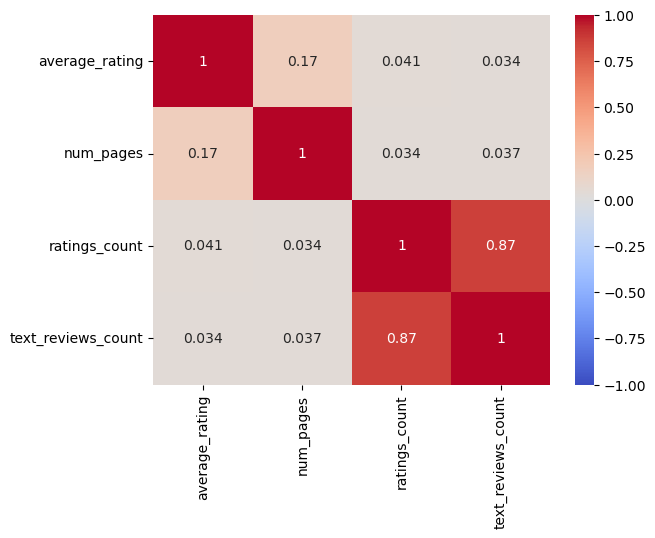
We see that the numerical variables are generally little correlated with the respnse variable "average_rating". This immediately tell us that some additional data processing will have to be done for us to create a good model.
pd.plotting.scatter_matrix(df_corr, figsize=(8,8), marker="o")
plt.show()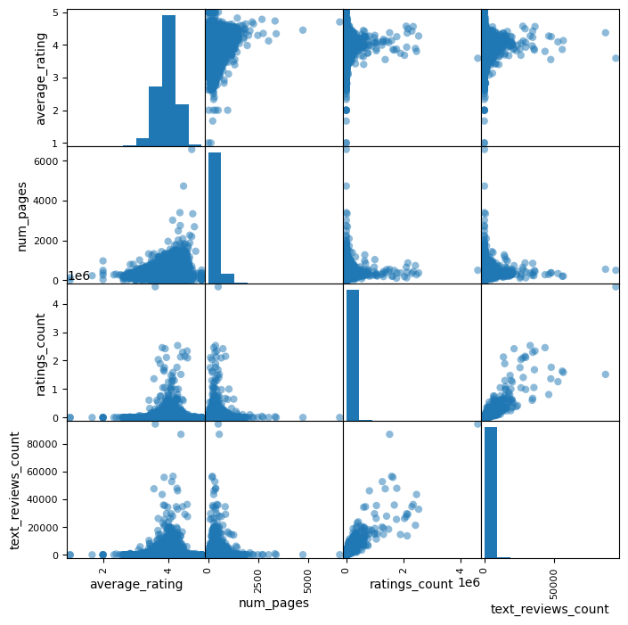
From the correlation scatter plot, we can to some degree understand the cause of the low and high correlations that we found in our previous plot.
Here we see that there is an exponential-like curve for the
bottom-left plot. This could indicated that a log function of
text_reviews_count could create stronger correlation with average_rating
as there would be a straigher line in the convex part of the plot.
On the other hand, if we look carefully, we see that at some point, the
text reviews go down for some of the books with the very highest ratings
that are close to 5.0.
This means that taking some log function of
text reviews will not be optimal, but will still help for the
majority.
We also see that the same case goes for ratings_count.
num_pages has a more linear correlation, but it is spreading out more for higher rated books, meaning that it is difficult to determine a function that will transforme these values into something with a higher correlation to average_rating.
We will now analyse each numerical variable separately.
plt.boxplot(df_corr["average_rating"])
plt.show()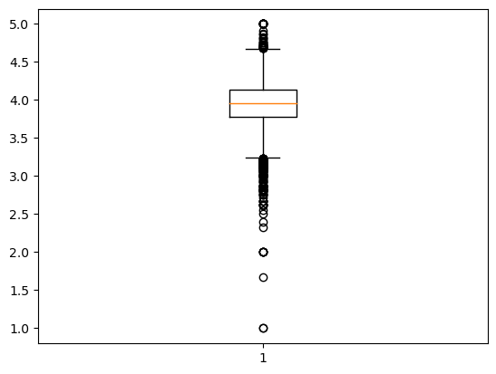
We see that the average_rating seems to be quite normally distributed
with a mean just below 4.
The reason for a larger spread of values
at the lower end could be because of the limitation of ratings, being
limited from 1 to 5, there is more space between 1 and the mean than
there is between 5 and the mean.
plt.boxplot(df_corr["num_pages"])
plt.show()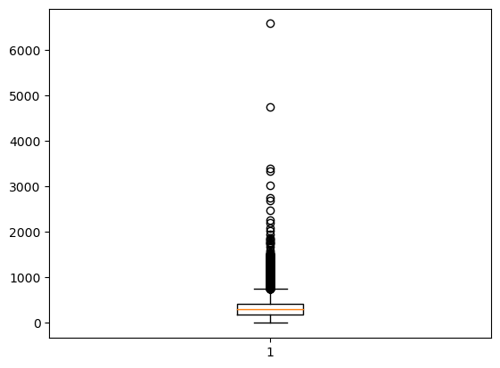
plt.boxplot(df_corr["ratings_count"])
plt.show()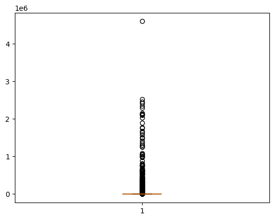
plt.boxplot(df_corr["text_reviews_count"])
plt.show()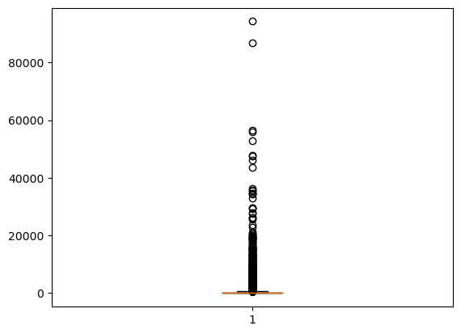
Looking at the other variables, there seems to be a poitive skewness to them.
For the num_pages, one can assume that when an author writes a very long book, adding another 100 pages is a relatively small part to add if he/she wants to add some more elements to the book. But if the book is already very short, adding another 100 pages means that there will be a very large proportional increase of its number of pages.
When it comes to the rating and review count, there is a simple
explantation one can assume for this skewness.
When a book becomes
a topic of conversation there are bound to be many people who read it
and review it. With so many reviews, if the reviews are good (which they
probably are due to the shape of the correlation curve) more people will
read and review them. When there are now even more reviews available,
even more people will discover these reviews and get the urge to read
the book to find out why so many people are reviewing the book.
For
a book with few reviews however, there are not many reviews of that
particular book one will randomly stumble upon when browsing reviews at
goodreads.com. This means that fewer people will read it than those
whith many reviews, and thus it will continue to have few reivews.
# Create a histogram
plt.hist(df_corr["text_reviews_count"], bins=30, edgecolor='black')
# Add labels and title
plt.xlabel('num_pages')
plt.ylabel('Frequency')
plt.title('Histogram')
# Show the histogram
plt.show()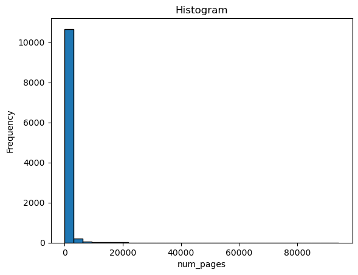
Although a bit difficult to see from this plot, we can see that most
of the books are between 0 and a couple of hundred pages, and then there
some around 500 and getting close to 1000, and then there are a couple
that are 2000 and more, that increase the mean value
Even though
those books with the most pages are not the most representative for this
dataset, we have chosen to keep them to as there are books of this kind
of size.
How this decision affects our final model will also depend
on what kind of model is being used.
By definition, isbn numbers not correlated to any information about the book with the possible exception of date published, although this also has somehting to do with the edition of the book. As we already have the date published for each book, there is no need for the isbn numbers, hence we remove them from our dataframe.
df = df.drop(columns=['isbn', 'isbn13'])For futher analysis of the publication date, we convert all the publication date values into the pandas datetime format. Those books not capable of this process will be removed from the dataframe as there is a relatively large chance that the reason is miss-reading of data, meaning that this value is not a date.
df["publication_date"] = pd.to_datetime(df["publication_date"], errors='coerce')
df = df.dropna();As we have seen from the descriptive data, there are many books of
many languages, but there are not many books for each language.
To
get some information from the language code, we therefore decide to
create a categorical variable telling if the book is in some kind of
English or not.
This will make sure that for each of the two
categories, there is a sufficient number of books.
After creating this variable, we remove the language code variable from the dataframe.
# Create Categorical variable. 1 if English, 0 if not English
df["is_eng"] = df["language_code"].str.contains('eng|en-').astype(int)
df.drop(columns=["language_code"]);As audiobooks are always published after the paper or e-book format of a book, one can assume that for each audiobook, there is a text based version.
We therefore created a filter to filter out and remove what we assume
to be audiobooks.
These are books with less than 30 pages, or books
published by a publisher with "Audio" in its name.
# Remove audiobooks
def is_audio(row):
if row['num_pages'] < 30 or "audio" in row["publisher"]:
return 1
else:
return 0
df["audio"] = df.apply(lambda row: is_audio(row), axis=1)
df = df[df.audio == 0]We now create some additional variables based on the ones we already have.
First we find how long it is since the book was published, based on the assumed date of extraction and the publication_date.
From that, we are able to find the average frequency of ratings and reviews.
We can also find the average rating_count and text_reviews_count per page of each book.
We do also find different combinations og log values of the generated variables we just mentioned.
specific_date_str = "2022-12-31" #yyyy-mm-dd
specific_date = pd.to_datetime(specific_date_str)
# Find time since the books were published
df["days_since_published"] = df["publication_date"].apply(lambda x: (specific_date - x).days)
df["years_since_published"] = df.days_since_published / 365.24
df["log_days_since_published"] = np.clip(np.log(df.days_since_published), 0, np.inf)df["log_num_pages"] = np.log(df.num_pages)
df["log_r_count"] = np.log(df.ratings_count)
df["log_t_count"] = np.clip(np.log(df.text_reviews_count), 0, np.inf)# Create variable that is rating/text_review per day/year/log_day (rating/review density)
df["r_count_per_day"] = df.ratings_count / df.days_since_published
df["t_count_per_day"] = df.text_reviews_count / df.days_since_published
df["r_count_per_year"] = df.ratings_count / df.years_since_published
df["t_count_per_year"] = df.text_reviews_count / df.years_since_published
df["r_count_per_log_day"] = df.ratings_count / df.log_days_since_published
df["t_count_per_log_day"] = df.text_reviews_count / df.log_days_since_publisheddf["log_r_count_per_day"] = df.log_r_count / df.days_since_published
df["log_t_count_per_day"] = df.log_t_count / df.days_since_published
df["log_r_count_per_year"] = df.log_r_count / df.years_since_published
df["log_t_count_per_year"] = df.log_t_count / df.years_since_published
df["log_r_count_per_log_day"] = df.log_r_count / df.log_days_since_published
df["log_t_count_per_log_day"] = df.log_t_count / df.log_days_since_publisheddf["ratings_count_per_num_pages"] = df.ratings_count / df.num_pages
df["text_reviews_count_per_num_pages"] = df.text_reviews_count / df.num_pages
df["ratings_count_per_log_num_pages"] = df.ratings_count / df.log_num_pages
df["text_reviews_count_per_log_num_pages"] = df.text_reviews_count / df.log_num_pages
df["log_r_count_per_num_pages"] = df.log_r_count / df.num_pages
df["log_t_count_per_num_pages"] = df.log_t_count / df.num_pages
df["log_r_count_per_log_num_pages"] = df.log_r_count / df.log_num_pages
df["log_t_count_per_log_num_pages"] = df.log_t_count / df.log_num_pagesAs of the scale of this model, and as we do not wish to create a NLP based model, we now remove the remaining sting-based variables from the dataframe before doing further analysis.
df = df.drop(columns=['title', 'authors', 'language_code', 'publication_date', 'publisher', 'audio'])We now do a check to see if all our remaining values are numeric, and if there are some books with non-numeric values in the dataframe as of now, these books will be removed from the dataframe.
df = df.apply(pd.to_numeric, errors='coerce').dropna()All values in the dataframe should now be numerical.
We create a correlation plot to get an understanding of our newly added variables.
corr = df.corr()
sns.heatmap(corr, annot=False, cmap="coolwarm", vmin=-1, vmax=1)
plt.show()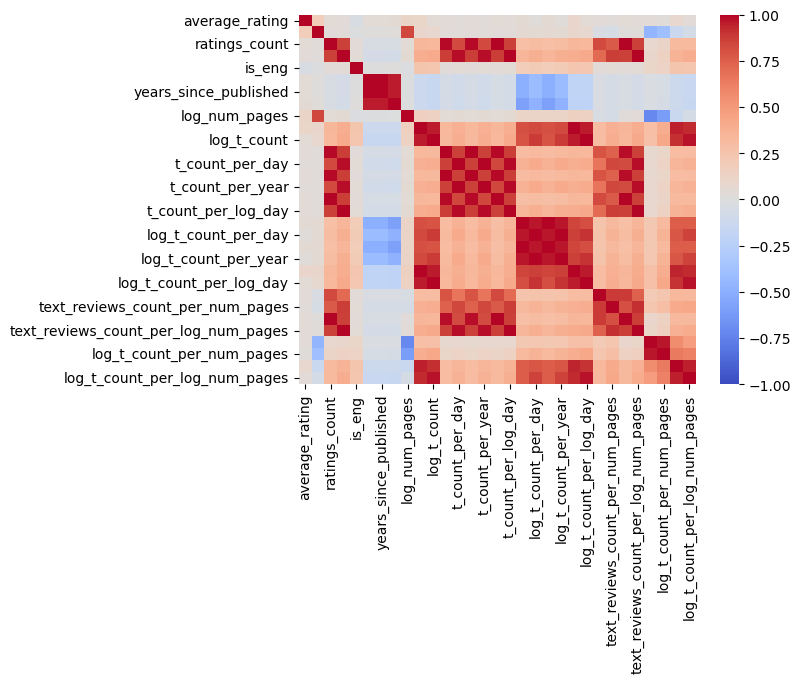
We split the correlation plot into 3 equally sized parts to have a closer look.
All the correlation plots contains average_rating.
c1 = df.iloc[:, 0:11]
corr = c1.corr()
sns.heatmap(corr, annot=True, cmap="coolwarm", vmin=-1, vmax=1)
plt.show()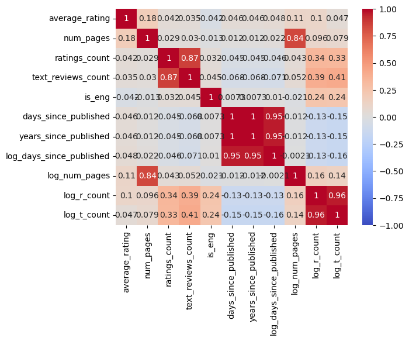
c2 = pd.concat([df.iloc[:, 0], df.iloc[:, 11:21]], axis=1)
corr = c2.corr()
sns.heatmap(corr, annot=True, cmap="coolwarm", vmin=-1, vmax=1)
plt.show()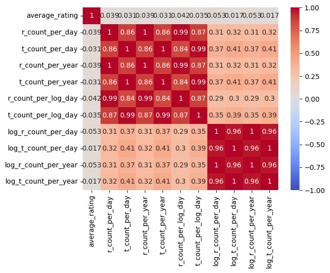
c3 = pd.concat([df.iloc[:, 0], df.iloc[:, 21:df.shape[1]]], axis=1)
corr = c3.corr()
sns.heatmap(corr, annot=True, cmap="coolwarm", vmin=-1, vmax=1)
plt.show()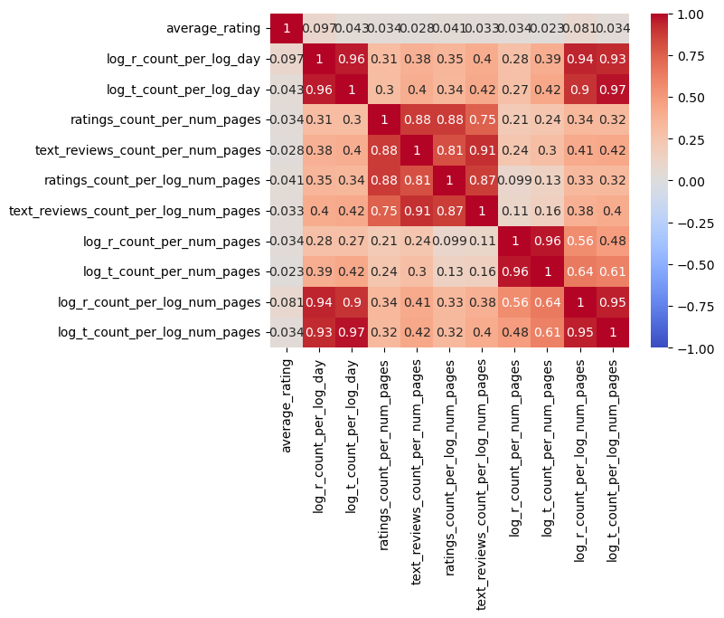
As we can see, there are now many highly correlated variables,
although still none of them are highly correlated with the response
variable. Even though, we can see that we have created some variables
that are more correlated with the response variable than some of those
we had initially.
We can for example see that log_num_pages and
log_r_count_per_log_day, some of our new variables has a higher
correlation than some of the old ones.
We will now find out what model is the best and the most stable by running it through a a series of random distributions of training- and test data.
The R2 scores for each model will be stored in a list that will be analysed afterwards.
After finding the model with the best R2, we will take a closer look at that model and see if there are some insignificant explanatory variables that can be removed.
We can already assume that this will be the case, as we can see from the correlation plot that some of the variables we created by transforming other variables are highly correlated with each other, but not that correlated with the response variable.
We start by defining our models:
def linmod(X_train, X_test, y_train, y_test):
# Linear regression model
# Create a linear regression model and limit predicted values to between 0 and 5
model = LinearRegression()
model.fit(X_train, y_train)
# Predict the target values for the test data
y_pred = np.clip(model.predict(X_test), 1, 5)
# Get the R^2 value
r2 = r2_score(y_test, y_pred)
mse = mean_squared_error(y_test, y_pred)
return r2, mse
def polmod(X_train, X_test, y_train, y_test):
# Polynomial regression model
# Create a polynomial regression model and limit predicted values to between 0 and 5
poly = PolynomialFeatures(degree=2)
X_train = poly.fit_transform(X_train)
X_test = poly.transform(X_test)
model = LinearRegression()
model.fit(X_train, y_train)
# Predict the target values for the test data
y_pred = np.clip(model.predict(X_test), 1, 5)
# Get the R^2 value for the test data
r2 = r2_score(y_test, y_pred)
mse = mean_squared_error(y_test, y_pred)
return r2, mse
def svrmod(X_train, X_test, y_train, y_test):
# Fit SVR model
model = SVR(kernel='rbf')
model.fit(X_train, y_train)
# Predict the target values for the test data
y_pred = np.clip(model.predict(X_test), 1, 5)
# Get R^2 value
r2 = r2_score(y_test, y_pred)
mse = mean_squared_error(y_test, y_pred)
return r2, mse
def rafmod(X_train, X_test, y_train, y_test):
# Fit random forest regression model
model = RandomForestRegressor(n_estimators=100)
model.fit(X_train, y_train)
# Predict on test data and limit predicted values to between 1 and 5
y_pred = np.clip(model.predict(X_test), 1, 5)
# Get R^2 value
r2 = r2_score(y_test, y_pred)
mse = mean_squared_error(y_test, y_pred)
return r2, mse
def ridmod(X_train, X_test, y_train, y_test):
# Instantiate the Ridge model
model = Ridge(alpha=0.000001)
# Fit the Ridge model to the training data
model.fit(X_train, y_train)
# Use the Ridge model to make predictions on the test data
y_pred = np.clip(model.predict(X_test), 1, 5)
# Get R^2 value
r2 = r2_score(y_test, y_pred)
mse = mean_squared_error(y_test, y_pred)
return r2, mse
def lasmod(X_train, X_test, y_train, y_test):
# Instantiate the Lasso model
model = Lasso(alpha=0.000001)
# Fit the Lasso model to the training data
model.fit(X_train, y_train)
# Use the Lasso model to make predictions on the test data
y_pred = np.clip(model.predict(X_test), 1, 5)
# Get R^2 value
r2 = r2_score(y_test, y_pred)
mse = mean_squared_error(y_test, y_pred)
return r2, mse
def baymod(X_train, X_test, y_train, y_test):
# Create and fit the Bayesian Ridge model
model = BayesianRidge()
model.fit(X_train, y_train)
# Use the bayesian ridge model to make predictions on the test data
y_pred = np.clip(model.predict(X_test), 1, 5)
# Get R^2 value
r2 = r2_score(y_test, y_pred)
mse = mean_squared_error(y_test, y_pred)
return r2, mse
def lgbmod(X_train, X_test, y_train, y_test):
# Train the LightGBM model
model = LGBMRegressor(learning_rate=0.07, n_estimators=100)
model.fit(X_train, y_train)
# Use the LightGBM model to make predictions on the test data
y_pred = np.clip(model.predict(X_test), 1, 5)
# Get R^2 value
r2 = r2_score(y_test, y_pred)
mse = mean_squared_error(y_test, y_pred)
return r2, mseX = df.iloc[:, 1:df.shape[1]]
y = df['average_rating']X_train, X_test, y_train, y_test = train_test_split(X, y, test_size=0.2, random_state = 1)
print(linmod(X_train, X_test, y_train, y_test))
print(polmod(X_train, X_test, y_train, y_test))
print(svrmod(X_train, X_test, y_train, y_test))
print(rafmod(X_train, X_test, y_train, y_test))
print(ridmod(X_train, X_test, y_train, y_test))
print(lasmod(X_train, X_test, y_train, y_test))
print(baymod(X_train, X_test, y_train, y_test))
print(lgbmod(X_train, X_test, y_train, y_test))(0.0931906469758923, 0.07561791589101592)
(0.05932547842801328, 0.078441898085673)
(0.013684871921737507, 0.08224782215614823)
(0.07056899822793872, 0.07750431232774675)
(0.09319017076125324, 0.0756179556020736)
(0.09183575538949651, 0.0757308989316957)
(0.08508034328949188, 0.0762942259224063)
(0.10211357472120908, 0.07487384196026431)
We can see that polynominal model, svr model and the random forest
model are not inferior to the other models.
Hence we will discard
those and focus on the remaining models.
linmod_rsq_list = []
#polmod_rsq_list = []
#svrmod_rsq_list = []
#rafmod_rsq_list = []
ridmod_rsq_list = []
lasmod_rsq_list = []
baymod_rsq_list = []
lgbmod_rsq_list = []
linmod_mse_list = []
#polmod_mse_list = []
#svrmod_mse_list = []
#rafmod_mse_list = []
ridmod_mse_list = []
lasmod_mse_list = []
baymod_mse_list = []
lgbmod_mse_list = []for i in range(1,31):
X_train, X_test, y_train, y_test = train_test_split(X, y, test_size=0.2, random_state = i)
rsq, mse = linmod(X_train, X_test, y_train, y_test)
linmod_rsq_list.append(rsq)
linmod_mse_list.append(mse)
#rsq, mse = polmod(X_train, X_test, y_train, y_test)
#polmod_rsq_list.append(rsq)
#polmod_mse_list.append(mse)
#rsq, mse = svrmod(X_train, X_test, y_train, y_test)
#svrmod_rsq_list.append(rsq)
#svrmod_mse_list.append(mse)
#rsq, mse = rafmod(X_train, X_test, y_train, y_test)
#rafmod_rsq_list.append(rsq)
#rafmod_mse_list.append(mse)
rsq, mse = ridmod(X_train, X_test, y_train, y_test)
ridmod_rsq_list.append(rsq)
ridmod_mse_list.append(mse)
rsq, mse = lasmod(X_train, X_test, y_train, y_test)
lasmod_rsq_list.append(rsq)
lasmod_mse_list.append(mse)
rsq, mse = baymod(X_train, X_test, y_train, y_test)
baymod_rsq_list.append(rsq)
baymod_mse_list.append(mse)
rsq, mse = lgbmod(X_train, X_test, y_train, y_test)
lgbmod_rsq_list.append(rsq)
lgbmod_mse_list.append(mse)
print(np.mean(linmod_rsq_list))
#print(np.mean(polmod_rsq_list))
#print(np.mean(svrmod_rsq_list))
#print(np.mean(rafmod_rsq_list))
print(np.mean(ridmod_rsq_list))
print(np.mean(lasmod_rsq_list))
print(np.mean(baymod_rsq_list))
print(np.mean(lgbmod_rsq_list))0.08878034145153019
0.08878075035748252
0.08972693819817139
0.08429784128852393
0.09926534061732838
print(np.mean(linmod_mse_list))
#print(np.mean(polmod_mse_list))
#print(np.mean(svrmod_mse_list))
#print(np.mean(rafmod_mse_list))
print(np.mean(ridmod_mse_list))
print(np.mean(lasmod_mse_list))
print(np.mean(baymod_mse_list))
print(np.mean(lgbmod_mse_list))0.07997637127941223
0.07997633477892595
0.07989276222436086
0.0803714003220104
0.07909268542508259
We see that the lgbmod, which is the LightGBM model has the highest R2 value.
We will now look closer at that model, we look at it for the latest random_state distribution seed for the training data and test data distribution. This can be done as we don't know how this seed compares with the other ones for this model, so our analysis of the model in this case is unbiased.
# Calculate p-values using statsmodels
X_with_constant = sm.add_constant(X_train)
ols_model = sm.OLS(y_train, X_with_constant).fit()
p_values = ols_model.summary2().tables[1]['P>|t|']
# Sort p-values from largest to smallest
sorted_p_values = p_values.sort_values(ascending=False)
print("P-values sorted from largest to smallest:")
print(sorted_p_values)P-values sorted from largest to smallest:
log_t_count_per_day 9.977301e-01
log_t_count_per_year 9.977301e-01
log_num_pages 9.601149e-01
years_since_published 6.970422e-01
days_since_published 6.968258e-01
ratings_count_per_num_pages 6.874249e-01
log_r_count_per_log_num_pages 6.272965e-01
ratings_count 6.183681e-01
log_r_count_per_num_pages 6.117183e-01
ratings_count_per_log_num_pages 5.774944e-01
log_r_count_per_year 5.087158e-01
log_r_count_per_day 5.087158e-01
r_count_per_log_day 4.917627e-01
log_t_count_per_num_pages 4.721478e-01
text_reviews_count_per_num_pages 4.560397e-01
text_reviews_count_per_log_num_pages 3.948316e-01
t_count_per_day 3.778037e-01
t_count_per_year 3.778037e-01
log_t_count_per_log_num_pages 2.896444e-01
r_count_per_day 2.327815e-01
r_count_per_year 2.327800e-01
t_count_per_log_day 2.166081e-01
text_reviews_count 1.437016e-01
log_r_count_per_log_day 5.604582e-02
log_r_count 4.530686e-02
log_t_count_per_log_day 2.615717e-02
log_t_count 1.397402e-02
log_days_since_published 5.851059e-03
const 1.526743e-04
is_eng 2.478907e-08
num_pages 3.633980e-18
Name: P>|t|, dtype: float64
We see that ratings_count_per_num_pages has the highest p-value, meaning it is the least significant variable for our model. We will nor try to simplify the model until all variables have a significance level of 90%
As the variables are correlated with each other to some degree, we can only remove one at a time as the p-values will potentially change for the other variables when one variable is removed.
X = X.drop(['ratings_count_per_num_pages'], axis=1)
X_train, X_test, y_train, y_test = train_test_split(X, y, test_size=0.2, random_state = i)
rsq, mse = lgbmod(X_train, X_test, y_train, y_test)
print(f"R^2 : {rsq}")
print(f"MSE : {mse}")
# Calculate p-values using statsmodels
X_with_constant = sm.add_constant(X_train)
ols_model = sm.OLS(y_train, X_with_constant).fit()
p_values = ols_model.summary2().tables[1]['P>|t|']
# Sort p-values from largest to smallest
sorted_p_values = p_values.sort_values(ascending=False)
print("P-values sorted from largest to smallest:")
print(sorted_p_values)R^2 : 0.07779959317766916
MSE : 0.08091509270910256
P-values sorted from largest to smallest:
log_t_count_per_day 9.966971e-01
log_t_count_per_year 9.966971e-01
log_num_pages 9.474375e-01
years_since_published 7.038834e-01
days_since_published 7.033574e-01
log_r_count_per_log_num_pages 6.441218e-01
ratings_count 5.868261e-01
log_r_count_per_num_pages 5.707548e-01
r_count_per_log_day 5.146427e-01
log_t_count_per_num_pages 5.103270e-01
log_r_count_per_day 5.098185e-01
log_r_count_per_year 5.098185e-01
ratings_count_per_log_num_pages 5.065674e-01
t_count_per_year 3.704797e-01
t_count_per_day 3.704797e-01
text_reviews_count_per_num_pages 3.122713e-01
log_t_count_per_log_num_pages 3.040270e-01
r_count_per_year 2.447463e-01
r_count_per_day 2.447444e-01
text_reviews_count_per_log_num_pages 2.129224e-01
t_count_per_log_day 2.036736e-01
text_reviews_count 1.577687e-01
log_r_count_per_log_day 5.612768e-02
log_r_count 4.586784e-02
log_t_count_per_log_day 2.615186e-02
log_t_count 1.419939e-02
log_days_since_published 6.074531e-03
const 1.447302e-04
is_eng 2.488038e-08
num_pages 3.925467e-18
Name: P>|t|, dtype: float64
We continue the procedure of removing the variable with the highest p-value and then re-calculating the p-values
X = X.drop(['log_r_count_per_log_num_pages'], axis=1)
X_train, X_test, y_train, y_test = train_test_split(X, y, test_size=0.2, random_state = i)
rsq, mse = lgbmod(X_train, X_test, y_train, y_test)
print(f"R^2 : {rsq}")
print(f"MSE : {mse}")
# Calculate p-values using statsmodels
X_with_constant = sm.add_constant(X_train)
ols_model = sm.OLS(y_train, X_with_constant).fit()
p_values = ols_model.summary2().tables[1]['P>|t|']
# Sort p-values from largest to smallest
sorted_p_values = p_values.sort_values(ascending=False)
print("P-values sorted from largest to smallest:")
print(sorted_p_values)R^2 : 0.07659357975338554
MSE : 0.08102090993420072
P-values sorted from largest to smallest:
log_t_count_per_year 9.911709e-01
log_t_count_per_day 9.911709e-01
log_num_pages 9.368131e-01
days_since_published 7.043394e-01
years_since_published 6.659871e-01
log_t_count_per_num_pages 6.120292e-01
ratings_count 5.826213e-01
ratings_count_per_log_num_pages 5.288175e-01
r_count_per_log_day 5.123060e-01
log_r_count_per_year 5.055634e-01
log_r_count_per_day 5.055634e-01
t_count_per_year 3.740854e-01
t_count_per_day 3.740847e-01
text_reviews_count_per_num_pages 3.360341e-01
r_count_per_year 2.436049e-01
r_count_per_day 2.435294e-01
text_reviews_count_per_log_num_pages 2.381682e-01
t_count_per_log_day 2.066626e-01
text_reviews_count 1.631233e-01
log_r_count_per_log_day 5.575653e-02
log_r_count 5.202371e-02
log_t_count_per_log_num_pages 4.294451e-02
log_t_count_per_log_day 2.609006e-02
log_r_count_per_num_pages 2.351490e-02
log_t_count 1.601504e-02
log_days_since_published 5.947602e-03
const 1.310606e-04
is_eng 2.464521e-08
num_pages 1.046651e-18
Name: P>|t|, dtype: float64
X = X.drop(['log_r_count_per_day'], axis=1)
X_train, X_test, y_train, y_test = train_test_split(X, y, test_size=0.2, random_state = i)
rsq, mse = lgbmod(X_train, X_test, y_train, y_test)
print(f"R^2 : {rsq}")
print(f"MSE : {mse}")
# Calculate p-values using statsmodels
X_with_constant = sm.add_constant(X_train)
ols_model = sm.OLS(y_train, X_with_constant).fit()
p_values = ols_model.summary2().tables[1]['P>|t|']
# Sort p-values from largest to smallest
sorted_p_values = p_values.sort_values(ascending=False)
print("P-values sorted from largest to smallest:")
print(sorted_p_values)R^2 : 0.07659357975338554
MSE : 0.08102090993420072
P-values sorted from largest to smallest:
log_t_count_per_year 9.911709e-01
log_t_count_per_day 9.911709e-01
log_num_pages 9.368131e-01
days_since_published 7.043399e-01
log_t_count_per_num_pages 6.120292e-01
years_since_published 6.034584e-01
ratings_count 5.826213e-01
ratings_count_per_log_num_pages 5.288175e-01
r_count_per_log_day 5.123060e-01
log_r_count_per_year 5.055634e-01
t_count_per_day 3.740861e-01
t_count_per_year 3.740854e-01
text_reviews_count_per_num_pages 3.360341e-01
r_count_per_year 2.436049e-01
r_count_per_day 2.434958e-01
text_reviews_count_per_log_num_pages 2.381682e-01
t_count_per_log_day 2.066626e-01
text_reviews_count 1.631233e-01
log_r_count_per_log_day 5.575653e-02
log_r_count 5.202371e-02
log_t_count_per_log_num_pages 4.294451e-02
log_t_count_per_log_day 2.609006e-02
log_r_count_per_num_pages 2.351490e-02
log_t_count 1.601504e-02
log_days_since_published 5.947602e-03
const 1.310606e-04
is_eng 2.464521e-08
num_pages 1.046651e-18
Name: P>|t|, dtype: float64
X = X.drop(['years_since_published'], axis=1)
X_train, X_test, y_train, y_test = train_test_split(X, y, test_size=0.2, random_state = i)
rsq, mse = lgbmod(X_train, X_test, y_train, y_test)
print(f"R^2 : {rsq}")
print(f"MSE : {mse}")
# Calculate p-values using statsmodels
X_with_constant = sm.add_constant(X_train)
ols_model = sm.OLS(y_train, X_with_constant).fit()
p_values = ols_model.summary2().tables[1]['P>|t|']
# Sort p-values from largest to smallest
sorted_p_values = p_values.sort_values(ascending=False)
print("P-values sorted from largest to smallest:")
print(sorted_p_values)R^2 : 0.07659357975338554
MSE : 0.08102090993420072
P-values sorted from largest to smallest:
log_t_count_per_day 9.911709e-01
log_t_count_per_year 9.911709e-01
log_num_pages 9.368131e-01
days_since_published 7.043391e-01
log_t_count_per_num_pages 6.120292e-01
ratings_count 5.826213e-01
ratings_count_per_log_num_pages 5.288175e-01
r_count_per_log_day 5.123060e-01
log_r_count_per_year 5.055634e-01
t_count_per_year 3.740854e-01
t_count_per_day 3.740854e-01
text_reviews_count_per_num_pages 3.360341e-01
r_count_per_day 2.436278e-01
r_count_per_year 2.436049e-01
text_reviews_count_per_log_num_pages 2.381682e-01
t_count_per_log_day 2.066626e-01
text_reviews_count 1.631233e-01
log_r_count_per_log_day 5.575653e-02
log_r_count 5.202371e-02
log_t_count_per_log_num_pages 4.294451e-02
log_t_count_per_log_day 2.609006e-02
log_r_count_per_num_pages 2.351490e-02
log_t_count 1.601504e-02
log_days_since_published 5.947602e-03
const 1.310606e-04
is_eng 2.464521e-08
num_pages 1.046651e-18
Name: P>|t|, dtype: float64
X = X.drop(['log_r_count_per_year'], axis=1)
X_train, X_test, y_train, y_test = train_test_split(X, y, test_size=0.2, random_state = i)
rsq, mse = lgbmod(X_train, X_test, y_train, y_test)
print(f"R^2 : {rsq}")
print(f"MSE : {mse}")
# Calculate p-values using statsmodels
X_with_constant = sm.add_constant(X_train)
ols_model = sm.OLS(y_train, X_with_constant).fit()
p_values = ols_model.summary2().tables[1]['P>|t|']
# Sort p-values from largest to smallest
sorted_p_values = p_values.sort_values(ascending=False)
print("P-values sorted from largest to smallest:")
print(sorted_p_values)R^2 : 0.07895873907385831
MSE : 0.08081338770337966
P-values sorted from largest to smallest:
days_since_published 9.977411e-01
log_num_pages 9.249998e-01
ratings_count 6.295167e-01
log_t_count_per_num_pages 6.096851e-01
r_count_per_log_day 5.566952e-01
ratings_count_per_log_num_pages 5.186550e-01
text_reviews_count_per_num_pages 3.375571e-01
r_count_per_day 2.741526e-01
r_count_per_year 2.739919e-01
text_reviews_count_per_log_num_pages 2.337038e-01
t_count_per_year 2.314393e-01
t_count_per_day 2.314381e-01
t_count_per_log_day 1.283452e-01
text_reviews_count 1.001875e-01
log_t_count_per_log_num_pages 4.087565e-02
log_r_count_per_num_pages 2.345238e-02
log_days_since_published 5.877405e-03
log_t_count_per_year 4.529444e-03
log_t_count_per_day 4.529444e-03
const 4.206176e-06
log_r_count 3.939012e-08
is_eng 2.411872e-08
log_r_count_per_log_day 1.470090e-09
log_t_count 2.868636e-12
log_t_count_per_log_day 7.272227e-13
num_pages 1.006651e-18
Name: P>|t|, dtype: float64
X = X.drop(['days_since_published'], axis=1)
X_train, X_test, y_train, y_test = train_test_split(X, y, test_size=0.2, random_state = i)
rsq, mse = lgbmod(X_train, X_test, y_train, y_test)
print(f"R^2 : {rsq}")
print(f"MSE : {mse}")
# Calculate p-values using statsmodels
X_with_constant = sm.add_constant(X_train)
ols_model = sm.OLS(y_train, X_with_constant).fit()
p_values = ols_model.summary2().tables[1]['P>|t|']
# Sort p-values from largest to smallest
sorted_p_values = p_values.sort_values(ascending=False)
print("P-values sorted from largest to smallest:")
print(sorted_p_values)R^2 : 0.07895651122107272
MSE : 0.08081358317815213
P-values sorted from largest to smallest:
log_num_pages 9.249629e-01
ratings_count 6.293245e-01
log_t_count_per_num_pages 6.096559e-01
r_count_per_log_day 5.565082e-01
ratings_count_per_log_num_pages 5.183142e-01
text_reviews_count_per_num_pages 3.375115e-01
r_count_per_year 2.739247e-01
r_count_per_day 2.739229e-01
text_reviews_count_per_log_num_pages 2.336652e-01
t_count_per_year 2.180160e-01
t_count_per_day 2.180159e-01
t_count_per_log_day 1.192881e-01
text_reviews_count 9.268883e-02
log_t_count_per_log_num_pages 4.084757e-02
log_r_count_per_num_pages 2.343159e-02
log_t_count_per_day 1.075940e-03
log_t_count_per_year 1.075940e-03
log_days_since_published 4.306682e-06
log_r_count 3.326343e-08
is_eng 2.402976e-08
log_r_count_per_log_day 1.200155e-09
const 1.597510e-12
log_t_count 4.138238e-13
log_t_count_per_log_day 5.786400e-14
num_pages 9.999475e-19
Name: P>|t|, dtype: float64
X = X.drop(['text_reviews_count_per_num_pages'], axis=1)
X_train, X_test, y_train, y_test = train_test_split(X, y, test_size=0.2, random_state = i)
rsq, mse = lgbmod(X_train, X_test, y_train, y_test)
print(f"R^2 : {rsq}")
print(f"MSE : {mse}")
# Calculate p-values using statsmodels
X_with_constant = sm.add_constant(X_train)
ols_model = sm.OLS(y_train, X_with_constant).fit()
p_values = ols_model.summary2().tables[1]['P>|t|']
# Sort p-values from largest to smallest
sorted_p_values = p_values.sort_values(ascending=False)
print("P-values sorted from largest to smallest:")
print(sorted_p_values)R^2 : 0.08117185489430057
MSE : 0.08061920597187934
P-values sorted from largest to smallest:
log_num_pages 8.921082e-01
log_t_count_per_num_pages 7.499376e-01
ratings_count 6.602837e-01
r_count_per_log_day 5.675805e-01
text_reviews_count_per_log_num_pages 4.800320e-01
r_count_per_day 2.668981e-01
r_count_per_year 2.668907e-01
ratings_count_per_log_num_pages 2.660318e-01
t_count_per_day 2.098658e-01
t_count_per_year 2.098658e-01
t_count_per_log_day 1.060692e-01
text_reviews_count 9.822319e-02
log_t_count_per_log_num_pages 5.574631e-02
log_r_count_per_num_pages 1.954521e-02
log_t_count_per_day 1.023968e-03
log_t_count_per_year 1.023968e-03
log_days_since_published 4.155557e-06
log_r_count 3.049899e-08
is_eng 2.489302e-08
log_r_count_per_log_day 1.104218e-09
const 1.544955e-12
log_t_count 4.156707e-13
log_t_count_per_log_day 4.918421e-14
num_pages 6.601650e-19
Name: P>|t|, dtype: float64
X = X.drop(['t_count_per_day'], axis=1)
X_train, X_test, y_train, y_test = train_test_split(X, y, test_size=0.2, random_state = i)
rsq, mse = lgbmod(X_train, X_test, y_train, y_test)
print(f"R^2 : {rsq}")
print(f"MSE : {mse}")
# Calculate p-values using statsmodels
X_with_constant = sm.add_constant(X_train)
ols_model = sm.OLS(y_train, X_with_constant).fit()
p_values = ols_model.summary2().tables[1]['P>|t|']
# Sort p-values from largest to smallest
sorted_p_values = p_values.sort_values(ascending=False)
print("P-values sorted from largest to smallest:")
print(sorted_p_values)R^2 : 0.08117185489430057
MSE : 0.08061920597187934
P-values sorted from largest to smallest:
log_num_pages 8.921082e-01
log_t_count_per_num_pages 7.499376e-01
ratings_count 6.602837e-01
r_count_per_log_day 5.675805e-01
text_reviews_count_per_log_num_pages 4.800320e-01
r_count_per_day 2.668951e-01
r_count_per_year 2.668907e-01
ratings_count_per_log_num_pages 2.660318e-01
t_count_per_year 2.098658e-01
t_count_per_log_day 1.060692e-01
text_reviews_count 9.822319e-02
log_t_count_per_log_num_pages 5.574631e-02
log_r_count_per_num_pages 1.954521e-02
log_t_count_per_year 1.023968e-03
log_t_count_per_day 1.023968e-03
log_days_since_published 4.155557e-06
log_r_count 3.049899e-08
is_eng 2.489302e-08
log_r_count_per_log_day 1.104218e-09
const 1.544955e-12
log_t_count 4.156707e-13
log_t_count_per_log_day 4.918421e-14
num_pages 6.601650e-19
Name: P>|t|, dtype: float64
X = X.drop(['t_count_per_year'], axis=1)
X_train, X_test, y_train, y_test = train_test_split(X, y, test_size=0.2, random_state = i)
rsq, mse = lgbmod(X_train, X_test, y_train, y_test)
print(f"R^2 : {rsq}")
print(f"MSE : {mse}")
# Calculate p-values using statsmodels
X_with_constant = sm.add_constant(X_train)
ols_model = sm.OLS(y_train, X_with_constant).fit()
p_values = ols_model.summary2().tables[1]['P>|t|']
# Sort p-values from largest to smallest
sorted_p_values = p_values.sort_values(ascending=False)
print("P-values sorted from largest to smallest:")
print(sorted_p_values)R^2 : 0.08326825319036435
MSE : 0.08043526519151717
P-values sorted from largest to smallest:
log_num_pages 8.977374e-01
log_t_count_per_num_pages 7.557874e-01
text_reviews_count_per_log_num_pages 5.957391e-01
ratings_count_per_log_num_pages 3.254730e-01
text_reviews_count 1.908493e-01
t_count_per_log_day 1.819478e-01
ratings_count 1.081239e-01
r_count_per_log_day 7.851864e-02
log_t_count_per_log_num_pages 6.199572e-02
r_count_per_day 2.096573e-02
r_count_per_year 2.096547e-02
log_r_count_per_num_pages 2.002320e-02
log_t_count_per_day 2.161898e-03
log_t_count_per_year 2.161898e-03
log_days_since_published 3.188722e-06
is_eng 2.506309e-08
log_r_count 2.112226e-08
log_r_count_per_log_day 7.287383e-10
const 2.147245e-12
log_t_count 9.218628e-13
log_t_count_per_log_day 1.055863e-13
num_pages 6.023291e-19
Name: P>|t|, dtype: float64
X = X.drop(['text_reviews_count_per_log_num_pages'], axis=1)
X_train, X_test, y_train, y_test = train_test_split(X, y, test_size=0.2, random_state = i)
rsq, mse = lgbmod(X_train, X_test, y_train, y_test)
print(f"R^2 : {rsq}")
print(f"MSE : {mse}")
# Calculate p-values using statsmodels
X_with_constant = sm.add_constant(X_train)
ols_model = sm.OLS(y_train, X_with_constant).fit()
p_values = ols_model.summary2().tables[1]['P>|t|']
# Sort p-values from largest to smallest
sorted_p_values = p_values.sort_values(ascending=False)
print("P-values sorted from largest to smallest:")
print(sorted_p_values)R^2 : 0.08468894159067641
MSE : 0.0803106120979254
P-values sorted from largest to smallest:
log_num_pages 9.063994e-01
log_t_count_per_num_pages 7.699576e-01
ratings_count_per_log_num_pages 2.903899e-01
text_reviews_count 2.317168e-01
t_count_per_log_day 2.114208e-01
ratings_count 1.031859e-01
r_count_per_log_day 8.127680e-02
log_t_count_per_log_num_pages 7.265655e-02
r_count_per_day 2.309392e-02
r_count_per_year 2.309373e-02
log_r_count_per_num_pages 2.130250e-02
log_t_count_per_day 2.225462e-03
log_t_count_per_year 2.225462e-03
log_days_since_published 3.112713e-06
is_eng 2.468291e-08
log_r_count 2.273952e-08
log_r_count_per_log_day 7.875510e-10
const 2.259779e-12
log_t_count 1.053424e-12
log_t_count_per_log_day 1.208302e-13
num_pages 4.267979e-19
Name: P>|t|, dtype: float64
X = X.drop(['log_r_count_per_num_pages'], axis=1)
X_train, X_test, y_train, y_test = train_test_split(X, y, test_size=0.2, random_state = i)
rsq, mse = lgbmod(X_train, X_test, y_train, y_test)
print(f"R^2 : {rsq}")
print(f"MSE : {mse}")
# Calculate p-values using statsmodels
X_with_constant = sm.add_constant(X_train)
ols_model = sm.OLS(y_train, X_with_constant).fit()
p_values = ols_model.summary2().tables[1]['P>|t|']
# Sort p-values from largest to smallest
sorted_p_values = p_values.sort_values(ascending=False)
print("P-values sorted from largest to smallest:")
print(sorted_p_values)R^2 : 0.0878357115148275
MSE : 0.08003451031108683
P-values sorted from largest to smallest:
ratings_count_per_log_num_pages 3.836645e-01
text_reviews_count 2.248798e-01
t_count_per_log_day 2.045243e-01
ratings_count 1.063539e-01
r_count_per_log_day 8.531830e-02
r_count_per_day 2.461420e-02
r_count_per_year 2.461398e-02
log_num_pages 1.893771e-02
log_t_count_per_log_num_pages 2.511438e-03
log_t_count_per_day 2.379593e-03
log_t_count_per_year 2.379593e-03
log_days_since_published 2.731836e-06
log_t_count_per_num_pages 1.611495e-07
log_r_count 3.052603e-08
is_eng 2.344832e-08
log_r_count_per_log_day 7.094023e-10
log_t_count 5.674929e-13
log_t_count_per_log_day 1.181236e-13
const 3.773386e-14
num_pages 5.512160e-23
Name: P>|t|, dtype: float64
X = X.drop(['ratings_count_per_log_num_pages'], axis=1)
X_train, X_test, y_train, y_test = train_test_split(X, y, test_size=0.2, random_state = i)
rsq, mse = lgbmod(X_train, X_test, y_train, y_test)
print(f"R^2 : {rsq}")
print(f"MSE : {mse}")
# Calculate p-values using statsmodels
X_with_constant = sm.add_constant(X_train)
ols_model = sm.OLS(y_train, X_with_constant).fit()
p_values = ols_model.summary2().tables[1]['P>|t|']
# Sort p-values from largest to smallest
sorted_p_values = p_values.sort_values(ascending=False)
print("P-values sorted from largest to smallest:")
print(sorted_p_values)R^2 : 0.08360539303940417
MSE : 0.08040568409185686
P-values sorted from largest to smallest:
text_reviews_count 2.237945e-01
t_count_per_log_day 2.039148e-01
ratings_count 1.097182e-01
r_count_per_log_day 9.488925e-02
r_count_per_day 3.049471e-02
r_count_per_year 3.049443e-02
log_num_pages 1.346638e-02
log_t_count_per_day 2.738164e-03
log_t_count_per_year 2.738164e-03
log_t_count_per_log_num_pages 6.928598e-04
log_days_since_published 3.191367e-06
log_t_count_per_num_pages 4.862640e-08
log_r_count 3.301165e-08
is_eng 2.310360e-08
log_r_count_per_log_day 7.759321e-10
log_t_count 4.702690e-13
log_t_count_per_log_day 1.297794e-13
const 2.065499e-14
num_pages 6.720865e-23
Name: P>|t|, dtype: float64
X = X.drop(['text_reviews_count'], axis=1)
X_train, X_test, y_train, y_test = train_test_split(X, y, test_size=0.2, random_state = i)
rsq, mse = lgbmod(X_train, X_test, y_train, y_test)
print(f"R^2 : {rsq}")
print(f"MSE : {mse}")
# Calculate p-values using statsmodels
X_with_constant = sm.add_constant(X_train)
ols_model = sm.OLS(y_train, X_with_constant).fit()
p_values = ols_model.summary2().tables[1]['P>|t|']
# Sort p-values from largest to smallest
sorted_p_values = p_values.sort_values(ascending=False)
print("P-values sorted from largest to smallest:")
print(sorted_p_values)R^2 : 0.08799445662809935
MSE : 0.08002058180328908
P-values sorted from largest to smallest:
ratings_count 3.278462e-02
r_count_per_log_day 3.256309e-02
r_count_per_year 2.854960e-02
r_count_per_day 2.854948e-02
log_num_pages 1.388003e-02
t_count_per_log_day 4.680612e-03
log_t_count_per_day 1.104978e-03
log_t_count_per_year 1.104978e-03
log_t_count_per_log_num_pages 6.899456e-04
log_days_since_published 4.689133e-06
log_r_count 6.716108e-08
log_t_count_per_num_pages 4.611025e-08
is_eng 2.385574e-08
log_r_count_per_log_day 1.613545e-09
log_t_count 9.576333e-13
log_t_count_per_log_day 2.586515e-13
const 8.873690e-15
num_pages 7.061654e-23
Name: P>|t|, dtype: float64
X = X.drop(['ratings_count'], axis=1)
X_train, X_test, y_train, y_test = train_test_split(X, y, test_size=0.2, random_state = i)
rsq, mse = lgbmod(X_train, X_test, y_train, y_test)
print(f"R^2 : {rsq}")
print(f"MSE : {mse}")
# Calculate p-values using statsmodels
X_with_constant = sm.add_constant(X_train)
ols_model = sm.OLS(y_train, X_with_constant).fit()
p_values = ols_model.summary2().tables[1]['P>|t|']
# Sort p-values from largest to smallest
sorted_p_values = p_values.sort_values(ascending=False)
print("P-values sorted from largest to smallest:")
print(sorted_p_values)R^2 : 0.08834960389393653
MSE : 0.07998942070888052
P-values sorted from largest to smallest:
r_count_per_log_day 8.812686e-01
r_count_per_year 6.170276e-01
r_count_per_day 6.170104e-01
log_num_pages 1.384675e-02
log_t_count_per_day 1.311317e-02
log_t_count_per_year 1.311317e-02
t_count_per_log_day 8.293104e-03
log_t_count_per_log_num_pages 7.954289e-04
log_days_since_published 2.570123e-06
log_t_count_per_num_pages 5.676850e-08
log_r_count 4.633609e-08
is_eng 2.491804e-08
log_r_count_per_log_day 1.081216e-09
log_t_count 8.223953e-12
log_t_count_per_log_day 2.467026e-12
const 1.991861e-14
num_pages 5.932458e-23
Name: P>|t|, dtype: float64
X = X.drop(['r_count_per_log_day'], axis=1)
X_train, X_test, y_train, y_test = train_test_split(X, y, test_size=0.2, random_state = i)
rsq, mse = lgbmod(X_train, X_test, y_train, y_test)
print(f"R^2 : {rsq}")
print(f"MSE : {mse}")
# Calculate p-values using statsmodels
X_with_constant = sm.add_constant(X_train)
ols_model = sm.OLS(y_train, X_with_constant).fit()
p_values = ols_model.summary2().tables[1]['P>|t|']
# Sort p-values from largest to smallest
sorted_p_values = p_values.sort_values(ascending=False)
print("P-values sorted from largest to smallest:")
print(sorted_p_values)R^2 : 0.0894632837348871
MSE : 0.07989170495543678
P-values sorted from largest to smallest:
r_count_per_year 2.099363e-01
r_count_per_day 2.099062e-01
log_num_pages 1.374259e-02
log_t_count_per_day 1.318491e-02
log_t_count_per_year 1.318491e-02
t_count_per_log_day 7.805283e-03
log_t_count_per_log_num_pages 7.998509e-04
log_days_since_published 2.333532e-06
log_t_count_per_num_pages 5.723610e-08
log_r_count 4.675107e-08
is_eng 2.468018e-08
log_r_count_per_log_day 1.089575e-09
log_t_count 7.921331e-12
log_t_count_per_log_day 2.386505e-12
const 1.067441e-14
num_pages 5.700371e-23
Name: P>|t|, dtype: float64
X = X.drop(['r_count_per_day'], axis=1)
X_train, X_test, y_train, y_test = train_test_split(X, y, test_size=0.2, random_state = i)
rsq, mse = lgbmod(X_train, X_test, y_train, y_test)
print(f"R^2 : {rsq}")
print(f"MSE : {mse}")
# Calculate p-values using statsmodels
X_with_constant = sm.add_constant(X_train)
ols_model = sm.OLS(y_train, X_with_constant).fit()
p_values = ols_model.summary2().tables[1]['P>|t|']
# Sort p-values from largest to smallest
sorted_p_values = p_values.sort_values(ascending=False)
print("P-values sorted from largest to smallest:")
print(sorted_p_values)R^2 : 0.0894632837348871
MSE : 0.07989170495543678
P-values sorted from largest to smallest:
r_count_per_year 2.099363e-01
log_num_pages 1.374259e-02
log_t_count_per_year 1.318491e-02
log_t_count_per_day 1.318491e-02
t_count_per_log_day 7.805283e-03
log_t_count_per_log_num_pages 7.998509e-04
log_days_since_published 2.333532e-06
log_t_count_per_num_pages 5.723610e-08
log_r_count 4.675107e-08
is_eng 2.468018e-08
log_r_count_per_log_day 1.089575e-09
log_t_count 7.921331e-12
log_t_count_per_log_day 2.386505e-12
const 1.067441e-14
num_pages 5.700371e-23
Name: P>|t|, dtype: float64
X = X.drop(['r_count_per_year'], axis=1)
X_train, X_test, y_train, y_test = train_test_split(X, y, test_size=0.2, random_state = i)
rsq, mse = lgbmod(X_train, X_test, y_train, y_test)
print(f"R^2 : {rsq}")
print(f"MSE : {mse}")
# Calculate p-values using statsmodels
X_with_constant = sm.add_constant(X_train)
ols_model = sm.OLS(y_train, X_with_constant).fit()
p_values = ols_model.summary2().tables[1]['P>|t|']
# Sort p-values from largest to smallest
sorted_p_values = p_values.sort_values(ascending=False)
print("P-values sorted from largest to smallest:")
print(sorted_p_values)R^2 : 0.08430097292558125
MSE : 0.08034465298564586
P-values sorted from largest to smallest:
log_t_count_per_day 1.446383e-02
log_t_count_per_year 1.446383e-02
log_num_pages 1.371101e-02
t_count_per_log_day 1.795164e-03
log_t_count_per_log_num_pages 8.769064e-04
log_days_since_published 3.357148e-06
log_r_count 7.109747e-08
log_t_count_per_num_pages 6.789585e-08
is_eng 2.616109e-08
log_r_count_per_log_day 1.764076e-09
log_t_count 1.261486e-11
log_t_count_per_log_day 3.905608e-12
const 4.629856e-15
num_pages 5.241109e-23
Name: P>|t|, dtype: float64
lgbmod_rsq_list = []
lgbmod_mse_list = []
for i in range(1,31):
X_train, X_test, y_train, y_test = train_test_split(X, y, test_size=0.2, random_state = i)
rsq, mse = lgbmod(X_train, X_test, y_train, y_test)
lgbmod_rsq_list.append(rsq)
lgbmod_mse_list.append(mse)
print(f"mean R^2 : {np.mean(lgbmod_rsq_list)}")
print(f"mean MSE : {np.mean(lgbmod_mse_list)}")mean R^2 : 0.09879827552726421
mean MSE : 0.07913022937364236
X = X.drop(['t_count_per_log_day'], axis=1)
X_train, X_test, y_train, y_test = train_test_split(X, y, test_size=0.2, random_state = i)
rsq, mse = lgbmod(X_train, X_test, y_train, y_test)
print(f"R^2 : {rsq}")
print(f"MSE : {mse}")
# Calculate p-values using statsmodels
X_with_constant = sm.add_constant(X_train)
ols_model = sm.OLS(y_train, X_with_constant).fit()
p_values = ols_model.summary2().tables[1]['P>|t|']
# Sort p-values from largest to smallest
sorted_p_values = p_values.sort_values(ascending=False)
print("P-values sorted from largest to smallest:")
print(sorted_p_values)R^2 : 0.0895027065116476
MSE : 0.07988824594846516
P-values sorted from largest to smallest:
log_t_count_per_year 2.053747e-02
log_t_count_per_day 2.053747e-02
log_num_pages 7.111774e-03
log_t_count_per_log_num_pages 4.572023e-04
log_days_since_published 1.531265e-06
log_r_count 8.411044e-08
log_t_count_per_num_pages 5.288123e-08
is_eng 7.022808e-09
log_r_count_per_log_day 2.121299e-09
log_t_count 3.129917e-11
log_t_count_per_log_day 1.281013e-11
const 1.117258e-14
num_pages 3.601356e-23
Name: P>|t|, dtype: float64
lgbmod_rsq_list = []
lgbmod_mse_list = []
for i in range(1,31):
X_train, X_test, y_train, y_test = train_test_split(X, y, test_size=0.2, random_state = i)
rsq, mse = lgbmod(X_train, X_test, y_train, y_test)
lgbmod_rsq_list.append(rsq)
lgbmod_mse_list.append(mse)
print(f"mean R^2 : {np.mean(lgbmod_rsq_list)}")
print(f"mean MSE : {np.mean(lgbmod_mse_list)}")mean R^2 : 0.10203355611556783
mean MSE : 0.07885155943585756
X = X.drop(['log_num_pages'], axis=1)
X_train, X_test, y_train, y_test = train_test_split(X, y, test_size=0.2, random_state = i)
rsq, mse = lgbmod(X_train, X_test, y_train, y_test)
print(f"R^2 : {rsq}")
print(f"MSE : {mse}")
# Calculate p-values using statsmodels
X_with_constant = sm.add_constant(X_train)
ols_model = sm.OLS(y_train, X_with_constant).fit()
p_values = ols_model.summary2().tables[1]['P>|t|']
# Sort p-values from largest to smallest
sorted_p_values = p_values.sort_values(ascending=False)
print("P-values sorted from largest to smallest:")
print(sorted_p_values)R^2 : 0.0895027065116476
MSE : 0.07988824594846516
P-values sorted from largest to smallest:
log_t_count_per_year 2.175677e-02
log_t_count_per_day 2.175677e-02
log_t_count_per_log_num_pages 1.173573e-03
log_days_since_published 1.071437e-06
log_r_count 6.002915e-08
is_eng 1.752999e-08
log_r_count_per_log_day 1.508645e-09
log_t_count_per_num_pages 5.229754e-10
log_t_count 3.743814e-11
log_t_count_per_log_day 1.087080e-11
const 2.737318e-13
num_pages 2.029396e-29
Name: P>|t|, dtype: float64
lgbmod_rsq_list = []
lgbmod_mse_list = []
for i in range(1,31):
X_train, X_test, y_train, y_test = train_test_split(X, y, test_size=0.2, random_state = i)
rsq, mse = lgbmod(X_train, X_test, y_train, y_test)
lgbmod_rsq_list.append(rsq)
lgbmod_mse_list.append(mse)
print(f"mean R^2 : {np.mean(lgbmod_rsq_list)}")
print(f"mean MSE : {np.mean(lgbmod_mse_list)}")mean R^2 : 0.10203355611556783
mean MSE : 0.07885155943585756
X = X.drop(['log_t_count_per_day'], axis=1)
X_train, X_test, y_train, y_test = train_test_split(X, y, test_size=0.2, random_state = i)
rsq, mse = lgbmod(X_train, X_test, y_train, y_test)
print(f"R^2 : {rsq}")
print(f"MSE : {mse}")
# Calculate p-values using statsmodels
X_with_constant = sm.add_constant(X_train)
ols_model = sm.OLS(y_train, X_with_constant).fit()
p_values = ols_model.summary2().tables[1]['P>|t|']
# Sort p-values from largest to smallest
sorted_p_values = p_values.sort_values(ascending=False)
print("P-values sorted from largest to smallest:")
print(sorted_p_values)R^2 : 0.0895027065116476
MSE : 0.07988824594846516
P-values sorted from largest to smallest:
log_t_count_per_year 2.175677e-02
log_t_count_per_log_num_pages 1.173573e-03
log_days_since_published 1.071437e-06
log_r_count 6.002915e-08
is_eng 1.752999e-08
log_r_count_per_log_day 1.508645e-09
log_t_count_per_num_pages 5.229754e-10
log_t_count 3.743814e-11
log_t_count_per_log_day 1.087080e-11
const 2.737318e-13
num_pages 2.029396e-29
Name: P>|t|, dtype: float64
lgbmod_rsq_list = []
lgbmod_mse_list = []
for i in range(1,31):
X_train, X_test, y_train, y_test = train_test_split(X, y, test_size=0.2, random_state = i)
rsq, mse = lgbmod(X_train, X_test, y_train, y_test)
lgbmod_rsq_list.append(rsq)
lgbmod_mse_list.append(mse)
print(f"mean R^2 : {np.mean(lgbmod_rsq_list)}")
print(f"mean MSE : {np.mean(lgbmod_mse_list)}")mean R^2 : 0.10203355611556783
mean MSE : 0.07885155943585756
X = X.drop(['log_t_count_per_year'], axis=1)
X_train, X_test, y_train, y_test = train_test_split(X, y, test_size=0.2, random_state = i)
rsq, mse = lgbmod(X_train, X_test, y_train, y_test)
print(f"R^2 : {rsq}")
print(f"MSE : {mse}")
# Calculate p-values using statsmodels
X_with_constant = sm.add_constant(X_train)
ols_model = sm.OLS(y_train, X_with_constant).fit()
p_values = ols_model.summary2().tables[1]['P>|t|']
# Sort p-values from largest to smallest
sorted_p_values = p_values.sort_values(ascending=False)
print("P-values sorted from largest to smallest:")
print(sorted_p_values)R^2 : 0.08763687157160072
MSE : 0.08005195679269911
P-values sorted from largest to smallest:
log_t_count_per_log_num_pages 1.543837e-03
log_days_since_published 5.630554e-08
log_r_count 2.527936e-08
is_eng 1.602948e-08
log_t_count_per_num_pages 7.356205e-10
log_r_count_per_log_day 5.689125e-10
log_t_count 5.504142e-10
log_t_count_per_log_day 1.466770e-10
const 2.701388e-12
num_pages 1.072581e-29
Name: P>|t|, dtype: float64
lgbmod_rsq_list = []
lgbmod_mse_list = []
for i in range(1,31):
X_train, X_test, y_train, y_test = train_test_split(X, y, test_size=0.2, random_state = i)
rsq, mse = lgbmod(X_train, X_test, y_train, y_test)
lgbmod_rsq_list.append(rsq)
lgbmod_mse_list.append(mse)
print(f"mean R^2 : {np.mean(lgbmod_rsq_list)}")
print(f"mean MSE : {np.mean(lgbmod_mse_list)}")mean R^2 : 0.10345865107788456
mean MSE : 0.07872513633193194
X = X.drop(['log_t_count_per_log_num_pages'], axis=1)
X_train, X_test, y_train, y_test = train_test_split(X, y, test_size=0.2, random_state = i)
rsq, mse = lgbmod(X_train, X_test, y_train, y_test)
print(f"R^2 : {rsq}")
print(f"MSE : {mse}")
# Calculate p-values using statsmodels
X_with_constant = sm.add_constant(X_train)
ols_model = sm.OLS(y_train, X_with_constant).fit()
p_values = ols_model.summary2().tables[1]['P>|t|']
# Sort p-values from largest to smallest
sorted_p_values = p_values.sort_values(ascending=False)
print("P-values sorted from largest to smallest:")
print(sorted_p_values)R^2 : 0.0876182975820089
MSE : 0.08005358649929942
P-values sorted from largest to smallest:
log_days_since_published 6.603700e-08
log_r_count 2.748145e-08
is_eng 2.261780e-08
log_t_count 6.547100e-09
log_r_count_per_log_day 6.330953e-10
log_t_count_per_log_day 1.605920e-10
const 3.269658e-12
log_t_count_per_num_pages 3.031567e-23
num_pages 5.536843e-76
Name: P>|t|, dtype: float64
lgbmod_rsq_list = []
lgbmod_mse_list = []
for i in range(1,31):
X_train, X_test, y_train, y_test = train_test_split(X, y, test_size=0.2, random_state = i)
rsq, mse = lgbmod(X_train, X_test, y_train, y_test)
lgbmod_rsq_list.append(rsq)
lgbmod_mse_list.append(mse)
print(f"mean R^2 : {np.mean(lgbmod_rsq_list)}")
print(f"mean MSE : {np.mean(lgbmod_mse_list)}")mean R^2 : 0.10295244936835474
mean MSE : 0.07876642912306721
X = X.drop(['log_days_since_published'], axis=1)
X_train, X_test, y_train, y_test = train_test_split(X, y, test_size=0.2, random_state = i)
rsq, mse = lgbmod(X_train, X_test, y_train, y_test)
print(f"R^2 : {rsq}")
print(f"MSE : {mse}")
# Calculate p-values using statsmodels
X_with_constant = sm.add_constant(X_train)
ols_model = sm.OLS(y_train, X_with_constant).fit()
p_values = ols_model.summary2().tables[1]['P>|t|']
# Sort p-values from largest to smallest
sorted_p_values = p_values.sort_values(ascending=False)
print("P-values sorted from largest to smallest:")
print(sorted_p_values)R^2 : 0.09253101611716352
MSE : 0.07962253802785546
P-values sorted from largest to smallest:
log_r_count 5.635720e-02
log_t_count 3.090782e-03
log_r_count_per_log_day 2.372773e-03
log_t_count_per_log_day 1.770035e-04
is_eng 8.369463e-08
log_t_count_per_num_pages 1.089519e-22
num_pages 9.365021e-76
const 0.000000e+00
Name: P>|t|, dtype: float64
lgbmod_rsq_list = []
lgbmod_mse_list = []
for i in range(1,31):
X_train, X_test, y_train, y_test = train_test_split(X, y, test_size=0.2, random_state = i)
rsq, mse = lgbmod(X_train, X_test, y_train, y_test)
lgbmod_rsq_list.append(rsq)
lgbmod_mse_list.append(mse)
print(f"mean R^2 : {np.mean(lgbmod_rsq_list)}")
print(f"mean MSE : {np.mean(lgbmod_mse_list)}")mean R^2 : 0.09756580319802405
mean MSE : 0.07923440822620915
We see here that the p-value decreases relatively much while at the same time, some of the remaining variables become less significant. It is therefore natural to stop here, so to not simplify the model into one that is not underfitted.
We keep the model where
log_days_since_published
log_r_count
log_t_count
log_r_count_per_log_day
log_t_count_per_log_day
is_eng
log_t_count_per_num_pages
num_pages
are the explanatory variables.
That is the previous model, the second to last one of those we have just tested with respect to removing variables.
We take a closer look at our new model
df_final = df[['average_rating', "log_days_since_published", "log_r_count", "log_t_count", "log_r_count_per_log_day", "log_t_count_per_log_day", "is_eng", "log_t_count_per_num_pages", "num_pages"]]
corr = df_final.corr()
sns.heatmap(corr, annot=True, cmap="coolwarm", vmin=-1, vmax=1)
plt.show()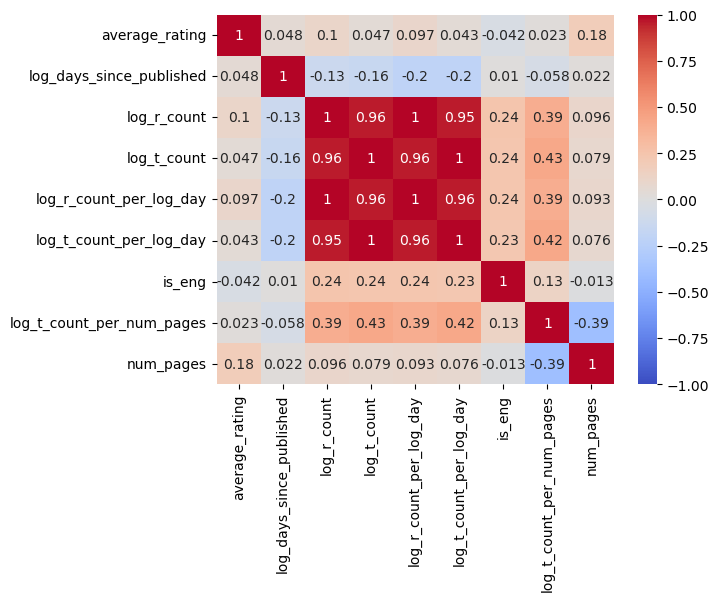
If we compare this with the correlation plot, we see that we have some more variables with a relatively high correlation with average_rating than what we had in the beginning, ref. the correlation plot of df[["average_rating", "num_pages", "ratings_count", "text_reviews_count"]]
X = df_final.iloc[:, 1:df_final.shape[1]]
y = df_final['average_rating']lgbmod_rsq_list = []
lgbmod_mse_list = []
for i in range(1,1001):
X_train, X_test, y_train, y_test = train_test_split(X, y, test_size=0.2, random_state = i)
rsq, mse = lgbmod(X_train, X_test, y_train, y_test)
lgbmod_rsq_list.append(rsq)
lgbmod_mse_list.append(mse)
print(f"mean R^2 : {np.mean(lgbmod_rsq_list)}")
print(f"mean MSE : {np.mean(lgbmod_mse_list)}")mean R^2 : 0.10170820727163742
mean MSE : 0.07695940214664815
# Create a histogram
plt.hist(lgbmod_rsq_list, bins=50, edgecolor='black')
# Add labels and title
plt.xlabel('R^2')
plt.ylabel('Frequency')
plt.title('Histogram')
# Show the histogram
plt.show()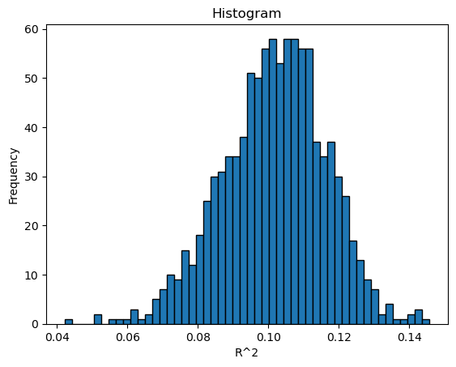
# Create a histogram
plt.hist(lgbmod_mse_list, bins=50, edgecolor='black')
# Add labels and title
plt.xlabel('MSE')
plt.ylabel('Frequency')
plt.title('Histogram')
# Show the histogram
plt.show()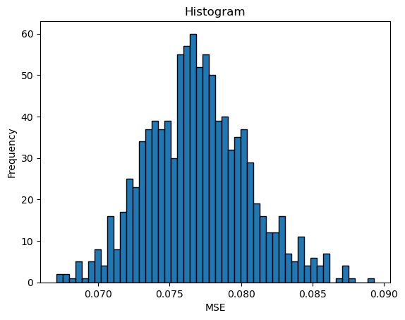